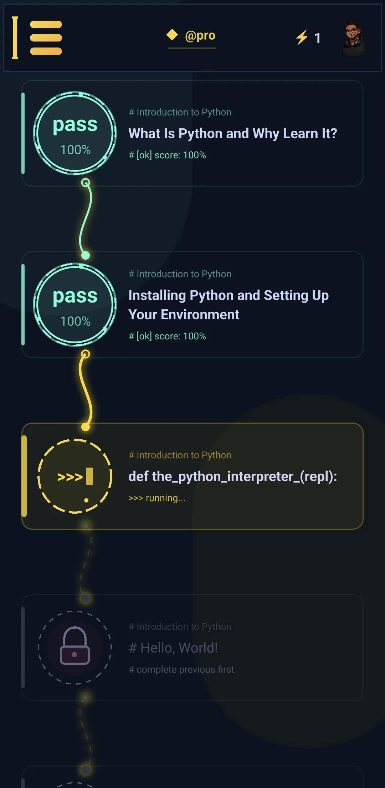

# one idea at a time x = 10 # a name for a value
Read a little
Short lessons with code you can follow, one idea at a time.
Short lessons that make you think: predict the output, fix the bug, put the code in order. Then practise with algorithms, design patterns and the questions interviewers really ask.
print("Hello, Python!")
Hello, Python!
[n * n for n in range(5)]Out[2]: [0, 1, 4, 9, 16]
"learn python".title()Out[3]: 'Learn Python'
sorted({"pears": 3, "apples": 5})
Out[4]:
['apples', 'pears']
>>> lesson.try_it()
This is how lessons work in the app: a short read, then one of each kind of question. Check your answer, and if it's wrong you get one more try before the explanation.
>>> interview.prep()
199 questions interviewers really ask, from junior to senior roles. Every one has a clear answer and a code example. Here are six from the app, try them:
>>> path.sections()
Sections that build on each other, from the basics to modern Python. Your progress, a daily streak, your own avatar and badges keep you coming back.
>>> lesson.questions
Every lesson asks something of you, so it sticks.
# one idea at a time x = 10 # a name for a value
Short lessons with code you can follow, one idea at a time.
print(2 ** 3) # what comes out?
Read the code the way Python would, then say what it prints.
for n in nums:
total = n # spot the bug
One line is wrong. Find it, and learn the mistake before it costs you an afternoon.
for ___ in range(3):
print(___)
Pick the right words to finish the code.
return x * 2 def double(x):
The lines are scrambled. Put them back so the code works.
# type of (1, 2)? # list, tuple or set
A straight question with one clear answer.
>>> app.tour()
Pick a part of the app to see it.

>>> help(plan)
Start for free. Pro unlocks the full curriculum and everything else in the app, for a single payment that's yours to keep. No ads, and no subscription.
>>> plan = {"start": "free", "pro": "one-time", "ads": 0} >>> plan["ads"] 0 >>> plan["subscription"] KeyError: 'subscription'